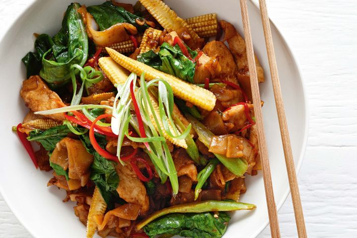

Pad-kee-mao 
Description
Pad-kee-mao is a Thai noodle dish, that is known for its wide array of flavors, and the spicy kicks
that will leave your mouth tingling for relief - in a good way. I would only reccomend this dish to spicy food enthusiasts. If you remove
this aspect of the plate, you're better off going for a sweeter noodle dish, such as Pad-thai or Pad-see-ew.
This was a favorite lunch meal of mine throughout my time in Thailand.
Ingredients
- chicken or tofu
- sesame oil
- peanut oil
- garlic
- red chillies
- green onions
- rice noodles
- Chinese brocolli
- dark soy sauce
- oyster sauce
- fish sauce
- brown sugar
Steps
- Add peanut oil to a wok or sauté, and add your choice of protein until it begins to
brown. Remove the proteins, and set aside for later. Add more peanut oil to the pan, along
with the garlic, giner, chilled and chopped spring onion, until it becomes fragrant.
- Return your choice of protein to the wok, along with the brocolli stems and corn. Continue to
stirfry for a couple of more minutes.
- Add the noodles and toss to combine with your protein and vegetables.
- Add the soy and oyster sauce, sugar, 1/4 cup of water, and broccoli leaves. Stir fry until the leaves
begin to wilt, and the protein is covered in sauce. Remove from heat.
- Serve, and enjoy!